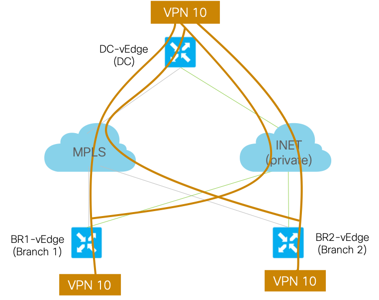
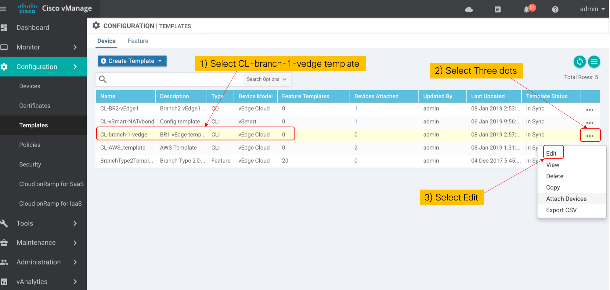
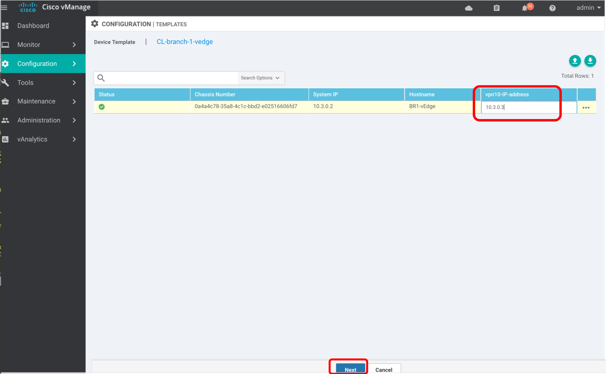
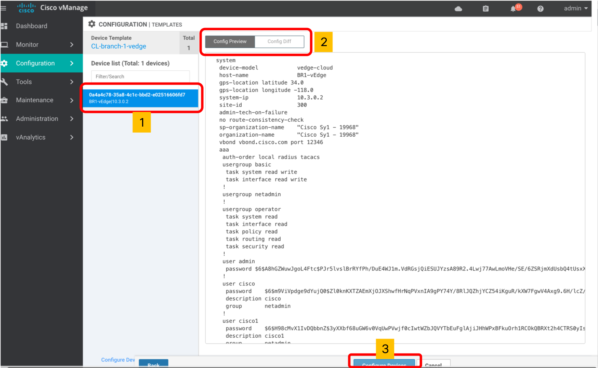
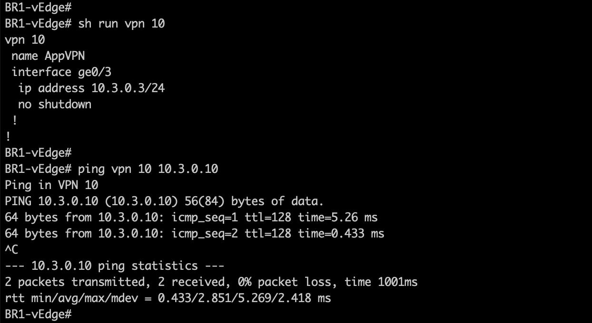
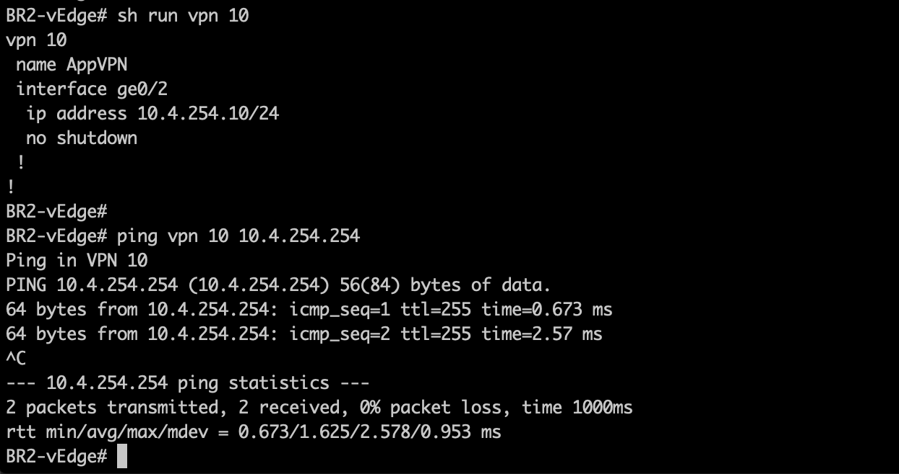
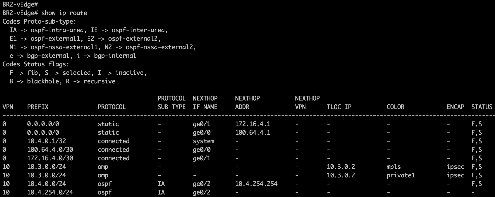
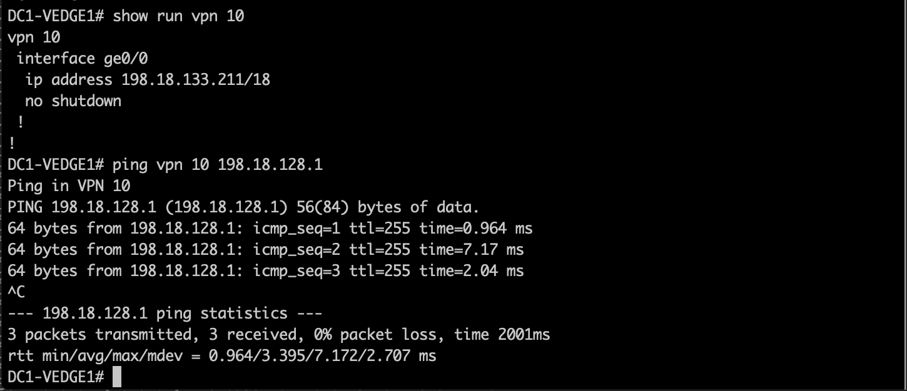

Task 5 - VPN on the Fabric
This task will walk through the steps to create full mesh VPN on the SD-WAN Fabric. Hence the traffic on these VPNs can be passed on the SDWAN Fabric keeping the end-to-end segmentation. We will create VPN number 10, 20, 30 in this exercise. These VPNs will exist on vEdges in BR1 and BR2 Branches as well as on Data Center (DC).
This configuration of vEdge can be done via Feature Templates or by using CLI Template on the vManage. We will use CLI Template of the vEdge for this lab. To provide differentiation, two separate CLI Templates will be created for vEdges in DC and Branches.
SDWAN Lab Topology
The logical topology of VPN number 10 is shown in below figure:

Pre-requisite: SDWAN controllers and 3 vEdges (in Branches & DC) must be fully operational. If those are not installed (or not operational) then please complete the previous Tasks first.
Step 1: Create VPN 10 on Branch 1 (BR1)
A new VPN (number 10) will be used to pass traffic between Applications between Branches, the Data Centers and subsequently to the application hosted on AWS Cloud.
-
Log on to the vManage from a web browser (if not already open) and use credentials of
adminandadmin:https://198.18.1.10 -
On the vManage GUI, navigate to Configuration > Templates > Device.
-
Then Select the CLI template named "CL-branch-1-vedge". Next, Click on the three dots on right-side of "CL-branch-1-vedge" > Edit as shown in below screenshot.

-
Edit option will allow you to add additional configurations in this template.
- Scroll all the way to the end of existing template,
- Then you can add (copy & paste will work) the below configuration at the end of the exiting template,
- Do not make any other changes to existing configurations in this template
vpn 10 name AppVPN interface ge0/3 ip address {{vpn10-IP-address}}/24 no shutdown
Note: Above configuration must include {{vpn10-IP-address}}syntax. Double curly brackets are interpreted as variable and this will be used to fill out IP addresses of each vEdge in the branch in subsequent bullet (during deployment of template)Important Note: Be very careful in making configuration changes on vEdge. Do NOT change any configuration of VPN 512 as it can result in loss of connectivity to the vEdge - which can not be restored. You will have to start the lab again from Task #1 if you loose network connectivity to a vEdge. -
After adding above configuration to this Template, Click on
Updatebutton. -
On the next screen, enter the ge0/3 IP address of vpn10-IP-address
10.3.0.3for Branch-1 in the respective field and Click theNextbutton. Below screenshot shows this:
-
On the next screen,
- Select the
BR1-vEdgeunder the Device list section (left part of screen). -
Then Select both
"Config Preview"and"Config Diff"options to verify that VPN 10 related configurations are added to this vEdge, and no changes to VPN 512 (or other interfaces) are done.Important Note: Be very careful in making configuration changes on vEdge. Do NOT change any configuration of VPN 512 as it can result in loss of connectivity to the vEdge - which can not be restored. You will have to start the lab again from Task #1 if you loose network connectivity to a vEdge. -
Once you have verifed the config changes Click on
Configure Devicesbutton on the lower section of screen, as shown in below screenshot:

- Select the
This completes the configuration of VPN 10 on BR1-vEdge
Step 2: Validate VPN 10 config on Branch 1
In this step we will confirm that BR1-vEdge has been provisioned for VPN #10 (as executed in the previous step). There are multiple ways to access the configuration of vEdge, such as:
- Direct SSH to Management IP address (VPN 512) of the vEdges
- Initiate SSH to vEdges from the vManage GUI
- Access the Running configuration of vEdges within vManage GUI by clicking on Configuration > Devices > Click on three dots on the right (next to the name) of vEdge and click Running Configuration from the drop-down menu
Below, we will use direct SSH mechanism to verify the configurtions:
-
You can launch SSH to vEdge in Branch-1 by using MPutty client on the Remote Desktop:
- SSH to OOB Management IP address of BR1-vEdge:
198.18.134.105 - Use credentials of
adminandadminfor authentication
Note: If admin/admincredentials do not work then you may try usingcisco/ciscoorcisco1/cisco1 - SSH to OOB Management IP address of BR1-vEdge:
-
On the SSH connection to vEdge, execute the below commands to:
- verify that VPN 10 has been successfully configured by vManage
- verify vEdge has connectivity to local device (on the LAN of vEdge) in VPN 10 by initiating a ping to a host on LAN :
show run vpn 10 ping vpn 10 10.3.0.10
Note: you can enter Control-C (Ctrl-C) to stop the ping Below screenshot shows the output of above command:

This successfully adds VPN 10 to Branch 1
Step 3: Create VPN 10 on Branch 2 (BR2)
Now lets create VPN 10 on BR2 vEdge.
You will use the above procedure in Step 1 & Step 2 to create & verify VPN 10 on vEdge in Branch-2 (BR2-vEdge). But in case of vEdge in Branch-2 you will need to adapt to below changes:
-
vEdge in Branch-2, with hostname BR2-vEdge, uses the CLI Template named:
CL-BR2-vEdge1. Hence you need to modify this template to add VPN 10 configurations -
VPN 10 will be configured on port ge0/2 on vEdge in Branch-2. Hence the below vpn 10 configuration will be added at the end of CLI template named
CL-BR2-vEdge1:vpn 10 name AppVPN interface ge0/2 ip address {{vpn10-IP-address}}/24 no shutdownImportant Note: Be very careful in making configuration changes on vEdge. Do NOT change any configuration of VPN 512 as it can result in loss of connectivity to the vEdge - which can not be restored. You will have to start the lab again from Task #1 if you loose network connectivity to a vEdge. -
vEgde in Branch-2 will be configured for IP address of
10.4.254.10on the ge0/2
Once the new template with VPN10 has been deployed then:
-
Using MPutty, initiate a SSH connection to BR2-vEdge, and execute the below commands to:
- verify that VPN 10 has been successfully configured by vManage
- verify vEdge has connectivity to local device (on the LAN of vEdge) in VPN 10 by initiating a ping to a host on LAN:
show run vpn 10 ping vpn 10 10.4.254.254
This will successfully add VPN 10 to vEdge in Branch 2. Below screenshot shows a successful test for BR2-vEdge:

Step 4: Verify VPN 10 routing on BR1 & BR2
Now we can verify the IP connectivity between vEdge in Branch-1 and Branch-2 on the VPN 10.
-
Using MTPutty, initiate SSH connections to BR1-vEdge and BR2-vEdge
-
Execute below commands on both BR1-vEdge and BR2-vEdge
show ip route show ip route vpn 10 show omp routes show omp routes vpn 10You should verify that each vEdge has learned the LAN segment IP address of remote vEdge (within VPN 10)
Below screenshot shows an example of partial execution of above commands from BR2-vEdge:

This confirms that VPN 10 is routed properly between BR1 and BR2
Step 5: Create VPN 10 on Data Center (DC)
Now lets configure this new VPN (number 1) on the vEdge in Data Center (DC).
- Log on to the vManage from a web browser (if not already open) and use credentials of
adminandadmin:
https://198.18.1.10
-
Enter the
admin/admincredentials for authentication -
On the vManage GUI, navigate to Configuration > Templates
-
Then from Device tab, Select the CLI template named "CL-DC-vedge". Next, Click on the three dots
...on right-side of "CL-DC-vedge" and Select Edit from the drop downmenu -
Next the configuration below at the end of the template.
!
vpn 10
interface ge0/0
ip address 198.18.133.211/18
no shutdown
!
-
After adding above configuration to Template, Click on Update > Next > Complete
-
Subsequently, confirm in the Tasks on vManage that the configurations are pushed to DC1-vEdge1
Step 6: Validate VPN 10 config on DC
In this step we will confirm that DC1-vEdge has been provisioned for VPN #10 (as executed in the previous step). There are multiple ways to access the configuration of vEdge, such as:
- Direct SSH to Management IP address (VPN 512) of the vEdges
- Initiate SSH to vEdges from the vManage GUI
- Access the Running configuration of vEdges within vManage GUI by clicking on Configuration > Devices > Click on three dots on the right (next to the name) of vEdge and click Running Configuration from the drop-down menu
Below, we will use direct SSH mechanism to verify the configurtions:
-
You can launch SSH to vEdge in DC1 by using MPutty client on the Remote Desktop:
- SSH to OOB Management IP address of DC1-VEDGE:
198.18.134.100 - Use credentials of
adminandadminfor authentication
Note: If admin/admincredentials do not work then you may try usingcisco/ciscoorcisco1/cisco1 - SSH to OOB Management IP address of DC1-VEDGE:
-
On the SSH connection to vEdge, execute the below commands:
show run vpn 10
ping vpn 10 198.18.128.1
| Note: |
|---|
| you can enter Control-C (Ctrl-C) to stop the ping |
These commands verify that:
- VPN 10 has been successfully configured by vManage,
- vEdge has connectivity to local device (on the LAN of vEdge) in VPN 10 by initiating a ping to a host on LAN
Below screenshot shows the output of above command:

This successfully adds VPN 10 to DC
Step 7: Add VPN 20 and 30 on all vEdges (DC1, Branch1 & Branch2)
- Follow the same steps as mention above and apply following configs to the CLI Templates for respective vEdges and verify the routes:
| vEdge | Configs |
|---|---|
| DC1-vEdge | vpn 20 interface loopback20 ip address 10.20.100.1/32 no shutdown ! vpn 30 interface loopback30 ip address 10.30.100.1/32 no shutdown |
| BR1-vEdge | vpn 20 interface loopback20 ip address 10.20.1.1/32 no shutdown ! vpn 30 interface loopback30 ip address 10.30.1.1/32 no shutdown |
| BR2-vEdge | vpn 20 interface loopback20 ip address 10.20.2.1/32 no shutdown ! vpn 30 interface loopback30 ip address 10.30.2.1/32 no shutdown |
| Important Note: |
|---|
| Be very careful in making configuration changes on vEdge. Do NOT change any configuration of VPN 512 as it can result in loss of connectivity to the vEdge - which can not be restored. You will have to start the lab again from Task #1 if you loose network connectivity to a vEdge. |
You have now completed this task of adding VPNs on the SD-WAN Fabric